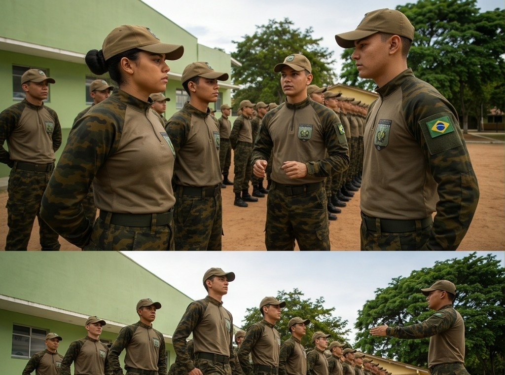
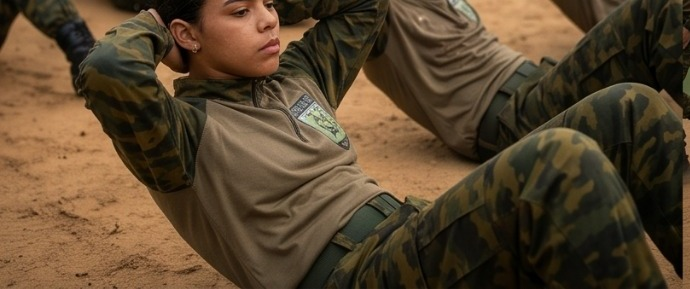
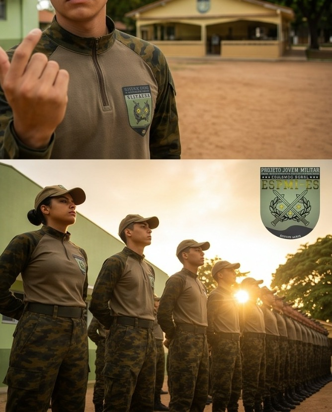
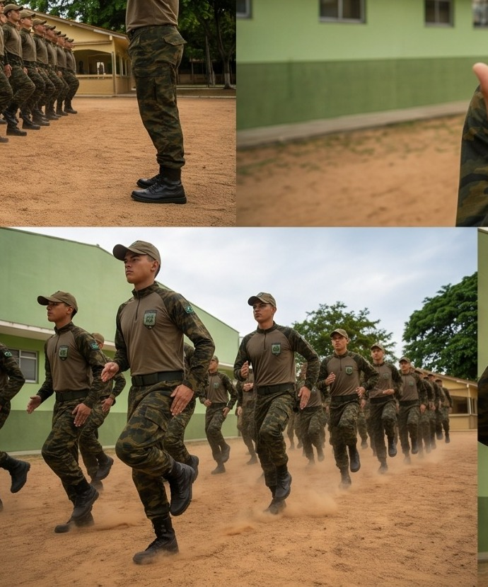
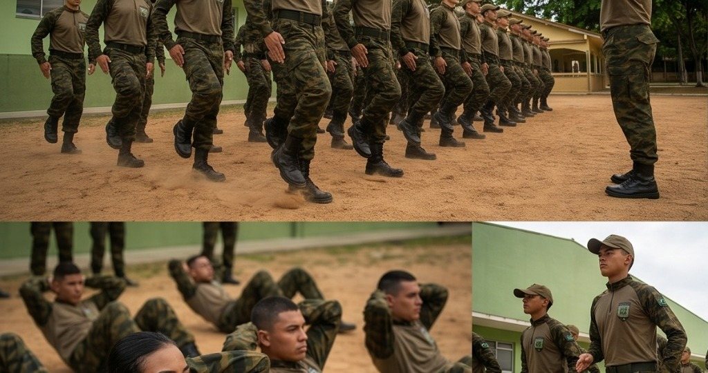
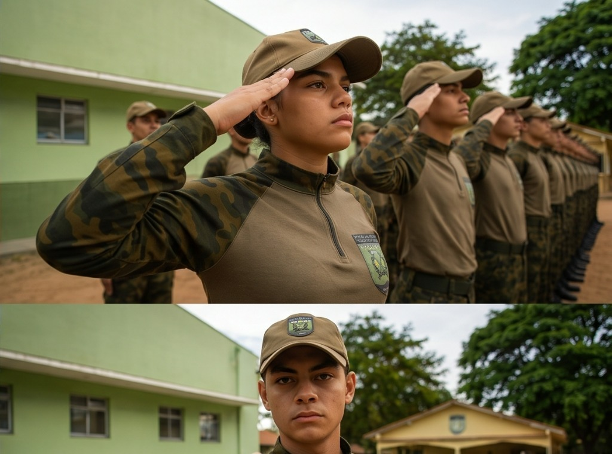

01
ORDEM UNIDA
Postura, disciplina, atenção, respeito e trabalho em equipe.
No Projeto Jovem Militar, cada atividade é uma oportunidade de aprendizado, superação e construção de um futuro melhor.
As atividades do Projeto Jovem Militar integram desenvolvimento pessoal, convivência, saúde, educação, cidadania e participação comunitária.

Postura, disciplina, atenção, respeito e trabalho em equipe.

Saúde, disposição, superação e preparação para os desafios da vida.

Valores, ética, respeito, responsabilidade e consciência social.

Conhecimento, organização, foco e desenvolvimento de novas habilidades.

Reconhecimento, compromisso, pertencimento e valorização da trajetória.

Solidariedade, participação e presença ativa junto à comunidade.
O PJM busca desenvolver disciplina, responsabilidade, liderança, cidadania e convivência, sempre respeitando sua natureza civil, educacional e social.